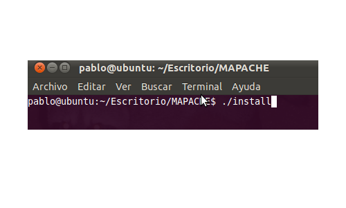
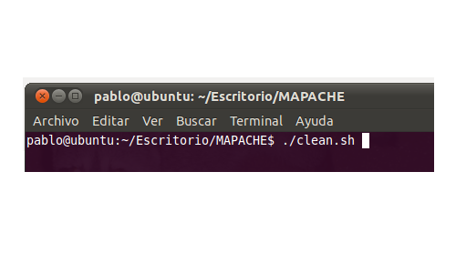

Instalando
Antes de instalar Mapache en su equipo, es necesario tener instaladas las siguientes librerias
* Cmake
* Libtinyxml
* Php5
* Gtkmm-2.4
* Log4cpp
Para la documentación automática se necesita instalar:
* Doxygen
* Graphviz
* Dot2tex
Una vez que se cumple con los requerimientos anteriores debemos instalar nuestro sistema. Para ello solo basta con dirigirnos desde una terminal hasta la carpeta MAPACHE donde se encuentra el código fuente y luego ejecutar el comando ./install.sh.(es importante que este archivo tenga permisos de ejecución) .

Una vez realizado esto ya estaremos en condiciones de utilizar el software.
Además del comando de instalación, tambien se presta un comando para desinstalar la aplicación. Este comando es ./clean.sh(al igual que con install este debe tener permisos de ejecución) .
